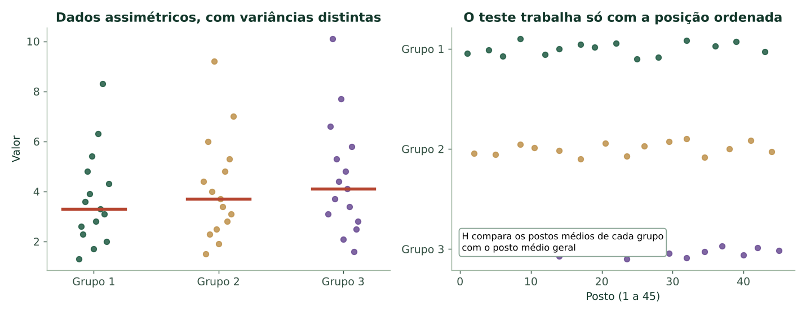
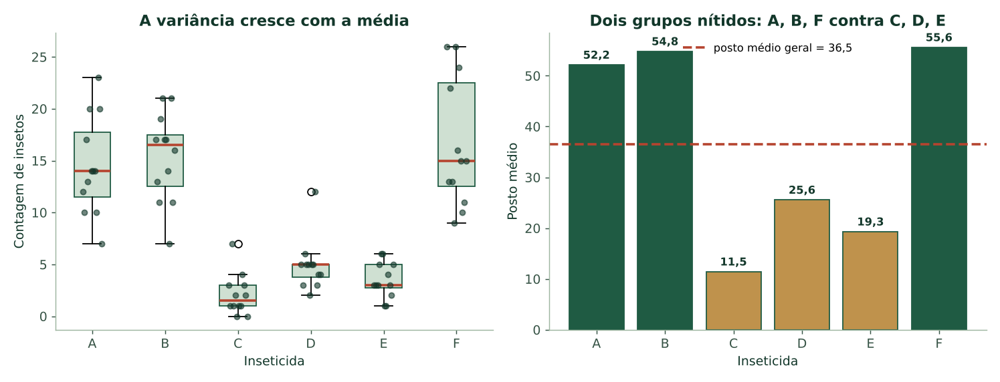

Kruskal–Wallis
Compara três ou mais grupos independentes usando os postos da ordenação conjunta, sem exigir normalidade.
Comece por aqui
Uma ANOVA de um fator responde à pergunta “as médias destes grupos são iguais?”, mas cobra dois pressupostos: normalidade dos resíduos e variâncias homogêneas. Quando a resposta é uma contagem, uma nota ou um escore com distribuição assimétrica, esses pressupostos costumam falhar juntos. O teste de Kruskal–Wallis faz a comparação usando apenas a posição de cada observação na ordenação conjunta.
Com apenas dois grupos, Kruskal–Wallis e Mann–Whitney levam exatamente à mesma decisão: \(H=z^2\). O teste de Kruskal–Wallis é a extensão natural para três ou mais grupos independentes.
O que é o teste
Todas as \(N\) observações são ordenadas em conjunto, ignorando-se de que grupo vieram, e cada uma recebe um posto de 1 a \(N\). Depois calcula-se o posto médio de cada grupo. Se os grupos tivessem a mesma distribuição, os postos se distribuiriam ao acaso entre eles e todos os postos médios ficariam próximos do valor central \((N+1)/2\). A estatística \(H\) mede, numa escala única, o quanto os postos médios observados se afastam desse centro.

Com formas de distribuição semelhantes entre os grupos (mesma dispersão e mesma assimetria), \(H\) testa igualdade de medianas. Sem essa semelhança, a hipótese nula é mais geral: as distribuições são idênticas. Rejeitar indica que pelo menos um grupo difere dos demais em distribuição, não necessariamente em mediana.
Pressupostos e como verificá-los
| Pressuposto | Por que importa | Como verificar |
|---|---|---|
| Observações independentes dentro e entre grupos | É o pressuposto sem o qual nada funciona. | Delineamento; para medidas repetidas use Friedman. |
| Variável ao menos ordinal | Os postos precisam de uma ordem. | Natureza da variável. |
| Formas de distribuição semelhantes entre os grupos | Define se a conclusão é sobre medianas ou sobre distribuições. | Boxplots lado a lado; compare amplitudes interquartis. |
| Grupos razoavelmente equilibrados | Com tamanhos muito desiguais e dispersões diferentes, a taxa de erro se desloca. | Conte as observações; considere a ANOVA de Welch. |
| Normalidade | Não é exigida. | — |
| Homogeneidade de variâncias | Não é exigida para a hipótese geral, mas importa para interpretar como diferença de medianas. | Brown–Forsythe (leveneTest com center = median). |
O valor-p vem de \(\chi^2\) com \(k-1\) graus de liberdade, aproximação que exige cerca de cinco observações por grupo. Com grupos muito pequenos, use o cálculo exato por permutação (coin::kruskal_test(..., distribution = "approximate")).
Hipóteses e estatística de teste
Em que:
- \(k\)
- número de grupos
- \(n_i\)
- tamanho do grupo i
- \(N\)
- soma dos n_i
- \(R_i\)
- soma dos postos do grupo i
- \(\bar{R}_i\)
- posto médio do grupo i
- \((N+1)/2\)
- posto médio geral, o valor esperado sob a hipótese nula
- \(t_j\)
- tamanho do j-ésimo grupo de valores empatados
Exemplo numérico, passo a passo
Com os dados dos seis inseticidas (12 observações cada, N = 72), os postos médios ficaram:
| Inseticida | A | B | C | D | E | F |
|---|---|---|---|---|---|---|
| Soma dos postos | 626,0 | 658,0 | 137,5 | 307,0 | 232,0 | 667,5 |
| Posto médio | 52,17 | 54,83 | 11,46 | 25,58 | 19,33 | 55,63 |
O posto médio geral é \((72+1)/2=36{,}5\). Somando \(R_i^2/n_i\) obtém-se 119.781,29, de modo que
Há empates nas contagens; com \(\sum(t_j^3-t_j)=1\,488\), o fator de correção é \(1-1\,488/(72^3-72)=0{,}99601\) e
A correção para empates sempre aumenta H, porque o denominador é menor que 1. Com poucos empates, o efeito é pequeno — aqui, de 54,47 para 54,69 — mas com muitos empates (escalas de poucos pontos, por exemplo) pode ser substancial.
Propriedades
- \(H\geq0\), com valor máximo \((N^2-1)/(N+1)\) alcançado quando os grupos não se sobrepõem.
- Invariante a qualquer transformação monótona da resposta: o logaritmo dos dados dá o mesmo H.
- Com dois grupos, equivale ao Mann–Whitney.
- Eficiência assintótica de 95,5% em relação à ANOVA quando os dados são de fato normais.
- Tamanho de efeito: \(\varepsilon^2=H/\left[(N^2-1)/(N+1)\right]\), entre 0 e 1.
- Rejeitar H₀ não diz quais grupos diferem: isso exige comparações múltiplas.
Como interpretar os resultados
| Elemento | O que informa | Cuidado |
|---|---|---|
| H (chi-squared no R) | Dispersão dos postos médios. | Já vem corrigido para empates. |
| gl = k − 1 | Número de grupos menos um. | Não depende de N. |
| Valor-p | Evidência de que algum grupo difere. | Não indica qual. |
| Postos médios | Ordenação dos grupos. | A leitura mais informativa do resultado. |
| ε² | Proporção da variabilidade dos postos explicada. | 0,01 pequeno; 0,06 médio; 0,14 grande. |
| Dunn com ajuste | Pares que diferem. | Ajuste obrigatório pelo número de comparações. |
Reporte: H, graus de liberdade, valor-p, os postos médios (ou as medianas) de cada grupo, o tamanho de efeito e o resultado das comparações múltiplas.
Como executar no R e em Python
Onde executar o código em Python
Não é preciso instalar nada: o Google Colab é um computador na nuvem, gratuito, que executa Python pelo navegador e já traz as bibliotecas usadas aqui (numpy, scipy e matplotlib).
kruskal.test() está no pacote stats, já instalado com o R, e aceita a fórmula resposta ~ grupo. As comparações múltiplas de Dunn vêm de FSA::dunnTest() ou dunn.test::dunn.test(); PMCMRplus oferece ainda os procedimentos de Conover e de Nemenyi. car::leveneTest() com center = median fornece o teste de Brown–Forsythe.
kruskal.test(count ~ spray, data = InsectSprays)
FSA::dunnTest(count ~ spray, data = InsectSprays, method = "bonferroni")
Exemplo de aplicação
Contexto dos dados
InsectSprays registra a contagem de insetos sobreviventes em 72 unidades experimentais tratadas com seis inseticidas diferentes, 12 unidades por inseticida. Como a resposta é uma contagem, a variância cresce com a média — exatamente o cenário em que a ANOVA clássica perde a validade.
Código em R
# Teste de Kruskal-Wallis: exemplo completo ----
# Pacotes: stats (base), car (Brown-Forsythe), FSA ou dunn.test (comparações múltiplas)
# install.packages(c("car", "FSA"))
library(car)
library(FSA)
# 1. Dados: contagem de insetos sobreviventes com seis inseticidas
# InsectSprays vem com o R; fonte original: Beall (1942).
data(InsectSprays)
str(InsectSprays)
aggregate(count ~ spray, data = InsectSprays,
FUN = function(x) c(n = length(x), media = mean(x), mediana = median(x), var = var(x)))
# 2. Por que não a ANOVA clássica: variâncias muito diferentes
leveneTest(count ~ spray, data = InsectSprays, center = median) # Brown-Forsythe
tapply(InsectSprays$count, InsectSprays$spray, var)
by(InsectSprays$count, InsectSprays$spray, shapiro.test)
# 3. O teste
kruskal.test(count ~ spray, data = InsectSprays)
# 4. Os postos por trás do resultado
InsectSprays$posto <- rank(InsectSprays$count)
tapply(InsectSprays$posto, InsectSprays$spray, mean) # postos médios
mean(InsectSprays$posto) # posto médio geral = (N+1)/2
# 5. Comparações múltiplas de Dunn
dunnTest(count ~ spray, data = InsectSprays, method = "bonferroni")
# alternativa: PMCMRplus::kwAllPairsDunnTest(count ~ spray, data = InsectSprays, p.adjust.method = "bonferroni")
# 6. Tamanho de efeito (epsilon ao quadrado)
H <- kruskal.test(count ~ spray, data = InsectSprays)$statistic
N <- nrow(InsectSprays)
H / ((N^2 - 1) / (N + 1))
# equivalente: rstatix::kruskal_effsize(InsectSprays, count ~ spray)
# 7. Comparação com a ANOVA de Welch e com a ANOVA clássica
oneway.test(count ~ spray, data = InsectSprays, var.equal = FALSE)
summary(aov(count ~ spray, data = InsectSprays))
# 8. Gráficos
par(mfrow = c(1, 2))
boxplot(count ~ spray, data = InsectSprays, col = "gray85",
xlab = "Inseticida", ylab = "Contagem de insetos")
points(jitter(as.numeric(InsectSprays$spray), 0.6), InsectSprays$count, pch = 19, col = "gray40")
barplot(tapply(InsectSprays$posto, InsectSprays$spray, mean), col = "gray85",
xlab = "Inseticida", ylab = "Posto médio")
abline(h = (nrow(InsectSprays) + 1) / 2, col = "red", lwd = 2, lty = 2)
par(mfrow = c(1, 1))
A mesma análise em Python, com os resultados
Cole o código em um notebook do Google Colab ↗ e execute com Shift+Enter. Os valores abaixo são a saída desse código.
# Bibliotecas: numpy, scipy e matplotlib (já instaladas no Google Colab)
import numpy as np
from scipy import stats
import matplotlib.pyplot as plt
import itertools
# Dados: conjunto InsectSprays (contagem de insetos em 72 parcelas, 6 inseticidas)
contagem = np.array([10,7,20,14,14,12,10,23,17,20,14,13, 11,17,21,11,16,14,17,17,19,21,7,13,
0,1,7,2,3,1,2,1,3,0,1,4, 3,5,12,6,4,3,5,5,5,5,2,4,
3,5,3,5,3,6,1,1,3,2,6,4, 11,9,15,22,15,16,13,10,26,26,24,13.])
spray = np.repeat(list("ABCDEF"), 12)
grupos = [contagem[spray == s] for s in "ABCDEF"]
N = len(contagem); k = len(grupos)
print("spray n média mediana DP variância")
for s, g in zip("ABCDEF", grupos):
print(f" {s} {len(g)} {g.mean():6.3f} {np.median(g):7.1f} {g.std(ddof=1):5.2f} {g.var(ddof=1):8.2f}")
# 1. Por que não usar a ANOVA: variância cresce com a média
lev = stats.levene(*grupos, center="median")
print(f"\nBrown-Forsythe: W = {lev.statistic:.4f}, p-valor = {lev.pvalue:.5f}")
print("Razão entre a maior e a menor variância:", round(max(g.var(ddof=1) for g in grupos) / min(g.var(ddof=1) for g in grupos), 2))
for s, g in zip("ABCDEF", grupos):
print(f" Shapiro-Wilk (spray {s}): p-valor = {stats.shapiro(g).pvalue:.4f}")
# 2. Postos de todas as 72 observações
postos = stats.rankdata(contagem)
Ri = np.array([postos[spray == s].sum() for s in "ABCDEF"])
ni = np.array([len(g) for g in grupos])
print(f"\nSoma dos postos por spray: {Ri}")
print(f"Posto médio por spray: {np.round(Ri / ni, 3)} | posto médio geral = {(N+1)/2:.1f}")
print(f"Soma total = {Ri.sum():.1f} = N(N+1)/2 = {N*(N+1)/2:.1f}")
# 3. Estatística H
H = 12 / (N * (N + 1)) * np.sum(Ri**2 / ni) - 3 * (N + 1)
emp = np.unique(contagem, return_counts=True)[1]
correcao = 1 - np.sum(emp**3 - emp) / (N**3 - N)
print(f"\nH (sem correção) = 12/({N}x{N+1}) x {np.sum(Ri**2/ni):.2f} - 3x{N+1} = {H:.4f}")
print(f"Correção para empates: 1 - {np.sum(emp**3-emp)}/({N}³-{N}) = {correcao:.5f}")
print(f"H corrigido = {H/correcao:.4f} | gl = {k-1} | p-valor = {stats.chi2.sf(H/correcao, k-1):.3e}")
print("scipy:", stats.kruskal(*grupos))
# 4. Comparação com a ANOVA clássica
f = stats.f_oneway(*grupos)
print(f"\nANOVA de um fator: F = {f.statistic:.4f}, p-valor = {f.pvalue:.3e}")
w = np.array([len(g) / g.var(ddof=1) for g in grupos]); mw = np.sum(w * np.array([g.mean() for g in grupos])) / w.sum()
A_ = np.sum(w * (np.array([g.mean() for g in grupos]) - mw)**2) / (k - 1)
B_ = 2 * (k - 2) / (k**2 - 1) * np.sum((1 - w / w.sum())**2 / (ni - 1))
Fw = A_ / (1 + B_); glw = (k**2 - 1) / (3 * np.sum((1 - w / w.sum())**2 / (ni - 1)))
print(f"ANOVA de Welch: F = {Fw:.4f}, gl = ({k-1}; {glw:.3f}), p-valor = {stats.f.sf(Fw, k-1, glw):.3e}")
# 5. Comparações múltiplas de Dunn, com ajuste de Bonferroni
print("\nTeste de Dunn (valores-p ajustados por Bonferroni):")
sigma = np.sqrt((N * (N + 1) / 12 - np.sum(emp**3 - emp) / (12 * (N - 1))))
pares = list(itertools.combinations(range(k), 2))
for i, j in pares:
z = (Ri[i]/ni[i] - Ri[j]/ni[j]) / (sigma * np.sqrt(1/ni[i] + 1/ni[j]))
p = min(1, 2 * stats.norm.sf(abs(z)) * len(pares))
marca = " *" if p < 0.05 else ""
print(f" {'ABCDEF'[i]} vs {'ABCDEF'[j]}: z = {z:>7.3f} | p ajustado = {p:.5f}{marca}")
# 6. Tamanho do efeito
eta2 = (H / correcao - k + 1) / (N - k)
print(f"\nEpsilon² = H / [(N²-1)/(N+1)] = {(H/correcao)/((N**2-1)/(N+1)):.4f}")
print(f"Eta² baseado em H = (H - k + 1)/(N - k) = {eta2:.4f}")
# 7. Gráficos
fig, ax = plt.subplots(1, 2, figsize=(11, 4))
ax[0].boxplot(grupos); ax[0].set_xticks(range(1, 7)); ax[0].set_xticklabels(list("ABCDEF"))
for j, g in enumerate(grupos, 1): ax[0].scatter(np.full(len(g), j), g, alpha=0.5)
ax[0].set_xlabel("Inseticida"); ax[0].set_ylabel("Contagem de insetos")
ax[1].bar(list("ABCDEF"), Ri / ni, color="lightgray", edgecolor="gray")
ax[1].axhline((N + 1) / 2, color="red", ls="--"); ax[1].set_ylabel("Posto médio"); ax[1].set_xlabel("Inseticida")
plt.show()
Resultados da execução
spray n média mediana DP variância A 12 14.500 14.0 4.72 22.27 B 12 15.333 16.5 4.27 18.24 C 12 2.083 1.5 1.98 3.90 D 12 4.917 5.0 2.50 6.27 E 12 3.500 3.0 1.73 3.00 F 12 16.667 15.0 6.21 38.61 Brown-Forsythe: W = 3.8214, p-valor = 0.00422 Razão entre a maior e a menor variância: 12.87 Shapiro-Wilk (spray A): p-valor = 0.7487 Shapiro-Wilk (spray B): p-valor = 0.6415 Shapiro-Wilk (spray C): p-valor = 0.0476 Shapiro-Wilk (spray D): p-valor = 0.0027 Shapiro-Wilk (spray E): p-valor = 0.2967 Shapiro-Wilk (spray F): p-valor = 0.1009 Soma dos postos por spray: [626. 658. 137.5 307. 232. 667.5] Posto médio por spray: [52.167 54.833 11.458 25.583 19.333 55.625] | posto médio geral = 36.5 Soma total = 2628.0 = N(N+1)/2 = 2628.0 H (sem correção) = 12/(72x73) x 119781.29 - 3x73 = 54.4733 Correção para empates: 1 - 1488/(72³-72) = 0.99601 H corrigido = 54.6913 | gl = 5 | p-valor = 1.511e-10 scipy: KruskalResult(statistic=np.float64(54.691344622371446), pvalue=np.float64(1.510844439418511e-10)) ANOVA de um fator: F = 34.7023, p-valor = 3.183e-17 ANOVA de Welch: F = 36.0654, gl = (5; 30.043), p-valor = 7.999e-12 Teste de Dunn (valores-p ajustados por Bonferroni): A vs B: z = -0.313 | p ajustado = 1.00000 A vs C: z = 4.774 | p ajustado = 0.00003 * A vs D: z = 3.118 | p ajustado = 0.02735 * A vs E: z = 3.851 | p ajustado = 0.00177 * A vs F: z = -0.406 | p ajustado = 1.00000 B vs C: z = 5.087 | p ajustado = 0.00001 * B vs D: z = 3.430 | p ajustado = 0.00904 * B vs E: z = 4.163 | p ajustado = 0.00047 * B vs F: z = -0.093 | p ajustado = 1.00000 C vs D: z = -1.657 | p ajustado = 1.00000 C vs E: z = -0.924 | p ajustado = 1.00000 C vs F: z = -5.180 | p ajustado = 0.00000 * D vs E: z = 0.733 | p ajustado = 1.00000 D vs F: z = -3.523 | p ajustado = 0.00640 * E vs F: z = -4.256 | p ajustado = 0.00031 * Epsilon² = H / [(N²-1)/(N+1)] = 0.7703 Eta² baseado em H = (H - k + 1)/(N - k) = 0.7529

| Inseticida | A | B | C | D | E | F |
|---|---|---|---|---|---|---|
| n | 12 | 12 | 12 | 12 | 12 | 12 |
| Média | 14,50 | 15,33 | 2,08 | 4,92 | 3,50 | 16,67 |
| Mediana | 14,0 | 16,5 | 1,5 | 5,0 | 3,0 | 15,0 |
| Variância | 22,27 | 18,24 | 3,90 | 6,27 | 3,00 | 38,61 |
| Elemento | Valor | Leitura |
|---|---|---|
| Brown–Forsythe | W = 3,821; p = 0,0042 | Variâncias heterogêneas; a ANOVA clássica fica comprometida. |
| Razão entre variâncias | 12,87 | Muito acima do tolerável para a ANOVA. |
| Shapiro–Wilk por grupo | p = 0,0476 (C) e p = 0,0027 (D) | Dois grupos com desvio de normalidade. |
| H corrigido | 54,691 | Com gl = 5. |
| Valor-p | 1,51 × 10⁻¹⁰ | Evidência muito forte de diferença. |
| ε² | 0,770 | Efeito grande. |
| ANOVA de Welch | F = 36,07; p = 8,0 × 10⁻¹² | Concorda com a conclusão. |
| Dunn (Bonferroni) | {A, B, F} ≠ {C, D, E} | Dentro de cada bloco, nada se separa. |
Leitura: os seis inseticidas não produzem a mesma distribuição de contagens. As comparações de Dunn organizam o resultado de forma clara: os inseticidas C, D e E deixaram poucos insetos sobrevivendo (postos médios entre 11,5 e 25,6) e diferem significativamente de A, B e F, cujos postos médios ficam entre 52,2 e 55,6. Dentro de cada bloco, nenhuma comparação atinge significância após o ajuste de Bonferroni — ou seja, há evidência para separar os dois grupos de produtos, mas não para eleger o melhor dentro do bloco mais eficaz.
A ANOVA de Welch (F = 36,07) e o Kruskal–Wallis (H = 54,69) chegam ao mesmo lugar. Isso é esperado quando o efeito é grande: a escolha entre os dois pesa mais em situações de fronteira. Uma terceira rota, bastante usada para contagens, é ajustar um modelo de Poisson ou binomial negativo, que modela a relação entre média e variância em vez de contorná-la.
Erros comuns
| Erro | Como evitar |
|---|---|
| Afirmar que o teste compara medianas sem verificar as formas | Só vale se as distribuições tiverem forma semelhante. |
| Parar no valor-p global | Rejeitar H₀ não diz qual grupo difere; faça as comparações múltiplas. |
| Aplicar Wilcoxon par a par sem ajustar o valor-p | Com seis grupos há 15 comparações; o erro tipo I explode. |
| Usar em medidas repetidas | Para o mesmo indivíduo medido k vezes, use Friedman. |
| Tratar como livre de pressupostos | Independência e formas semelhantes continuam a valer. |
| Usar com grupos minúsculos confiando na aproximação qui-quadrado | Com n < 5 por grupo, recorra à versão exata por permutação. |
| Ignorar a correção para empates | Com escalas de poucos pontos, a diferença é relevante — o R já aplica. |
Alternativas e fluxo de trabalho
| Procedimento | Quando preferir |
|---|---|
| ANOVA de um fator | Resíduos normais e variâncias homogêneas; interesse nas médias. |
| ANOVA de Welch | Resíduos aproximadamente normais, mas variâncias heterogêneas. |
ANOVA de medianas aparadas (WRS2::t1way) | Caudas pesadas, com interesse na parte central. |
| Teste de Brunner–Munzel generalizado | Formas de distribuição diferentes entre os grupos. |
| Regressão de Poisson ou binomial negativa | A resposta é contagem e há covariáveis. |
| Bootstrap | Qualquer estatística de interesse, com poucas suposições. |
| Teste de permutação | Amostras pequenas; interesse nas médias originais. |
| Friedman | Mesmas unidades medidas em todas as condições. |
- Confirme a independência: grupos independentes, não medidas repetidas.
- Faça boxplots lado a lado e compare centros, dispersões e formas.
- Verifique normalidade e homogeneidade; se as duas falharem, Kruskal–Wallis é uma boa escolha.
- Aplique o teste e relate H, gl e valor-p.
- Se rejeitar, faça as comparações de Dunn com ajuste.
- Reporte os postos médios ou as medianas e o tamanho de efeito.
- Considere, em paralelo, um modelo que trate a natureza da resposta (contagem, proporção).
Referências desta ficha
- KRUSKAL, William H.; WALLIS, W. Allen. Use of ranks in one-criterion variance analysis. Journal of the American Statistical Association, v. 47, n. 260, p. 583-621, 1952.
- DUNN, Olive Jean. Multiple comparisons using rank sums. Technometrics, v. 6, n. 3, p. 241-252, 1964.
- HOLLANDER, Myles; WOLFE, Douglas A.; CHICKEN, Eric. Nonparametric statistical methods. 3. ed. Hoboken: Wiley, 2014.
- CONOVER, William J. Practical nonparametric statistics. 3. ed. New York: Wiley, 1999.
- BEALL, Geoffrey. The transformation of data from entomological field experiments so that the analysis of variance becomes applicable. Biometrika, v. 32, n. 3-4, p. 243-262, 1942. (Fonte original dos dados
InsectSprays.) - R CORE TEAM. R: a language and environment for statistical computing. Vienna: R Foundation for Statistical Computing, 2026. Disponível em: https://www.r-project.org/. (Funções
kruskal.testeoneway.test, pacotestats.) - OGLE, Derek H. et al. FSA: simple fisheries stock assessment methods. R package. Disponível em: https://CRAN.R-project.org/package=FSA. (Função
dunnTest.) - FOX, John; WEISBERG, Sanford. An R companion to applied regression. 3. ed. Thousand Oaks: Sage, 2019. (Pacote
car, funçãoleveneTest.) - POHLERT, Thorsten. PMCMRplus: calculate pairwise multiple comparisons of mean rank sums extended. R package. Disponível em: https://CRAN.R-project.org/package=PMCMRplus.
- POSIT TEAM. RStudio: integrated development environment for R. Boston: Posit Software, PBC. Disponível em: https://posit.co/download/rstudio-desktop/.
- VIRTANEN, Pauli et al. SciPy 1.0: fundamental algorithms for scientific computing in Python. Nature Methods, v. 17, p. 261-272, 2020. DOI: 10.1038/s41592-019-0686-2. (Funções do módulo
scipy.stats.) - HARRIS, Charles R. et al. Array programming with NumPy. Nature, v. 585, p. 357-362, 2020. DOI: 10.1038/s41586-020-2649-2.
- HUNTER, John D. Matplotlib: a 2D graphics environment. Computing in Science & Engineering, v. 9, n. 3, p. 90-95, 2007.
- GOOGLE. Google Colaboratory. Disponível em: https://colab.research.google.com/.
- As figuras desta ficha foram elaboradas pelo autor.

Prof. Dr. Cássius Henrique Xavier Oliveira
Professor · ICTIN/UFLA · Estatística, Confiabilidade e Ciência de Dados.
Conheça minha trajetória e projetos →